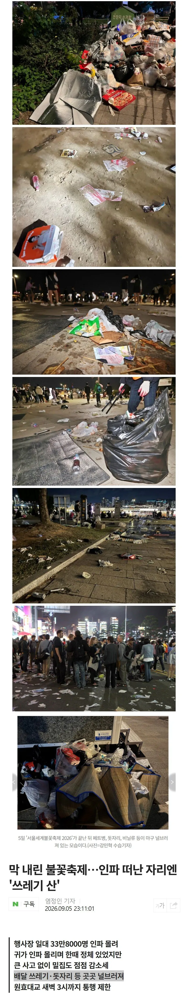
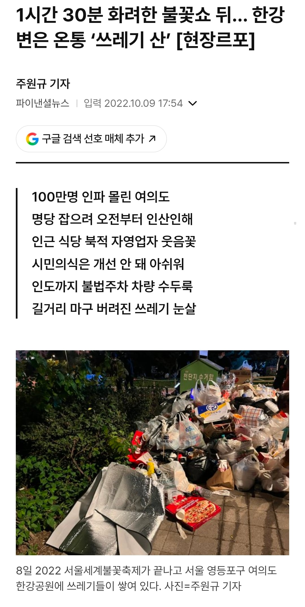
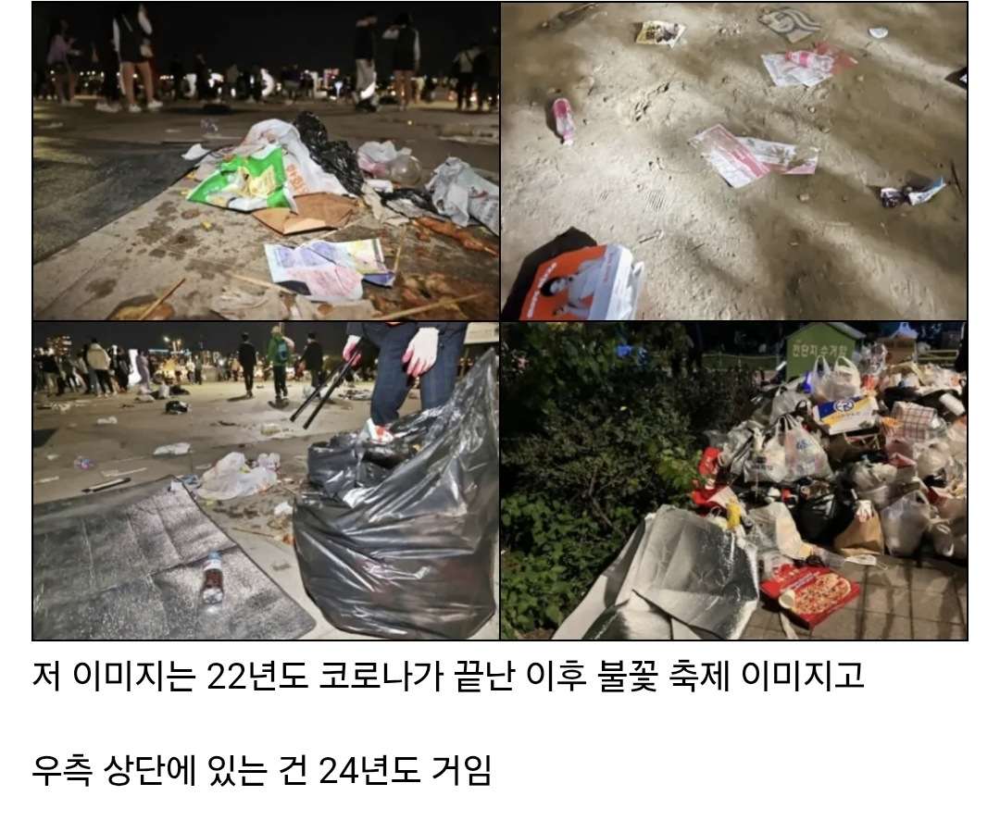
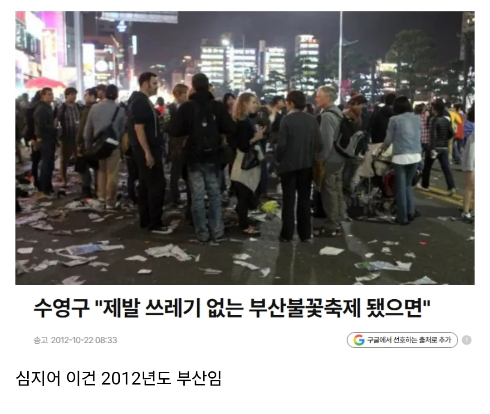
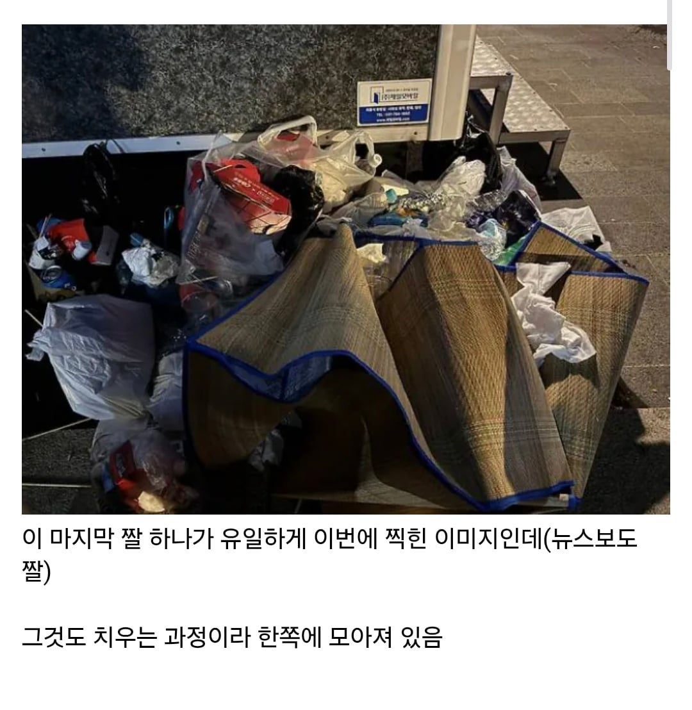

이 사진의 진실은

22년도 불꽃축제 사진임
언론이 팩트체크도 안하고 사진 쓴거고
심지어 22년도 기사랑 26년도 기사 쓴 언론사가 동일




이 사진의 진실은

22년도 불꽃축제 사진임
언론이 팩트체크도 안하고 사진 쓴거고
심지어 22년도 기사랑 26년도 기사 쓴 언론사가 동일



첫번째 피자 사진 올라온 커뮤가 missyusa인데 13시경에 올라온 사진임
저 선동된 글에 있는 기사 검색해보면 정작 사진은 5번째 사진만 있는데
나머지 사진은 왜 이어붙인걸까 선동할라고 그런걸까...
https://www.edaily.co.kr/News/Read?newsId=02581366645577168&mediaCodeNo=257
그래야 인기글가지
한인 교포들이 누구보다 혐한에 앞장선다더니...
미시아줌마들 존나 역함.. 여시년들이 결혼하면 그리 갈 듯
한화 직원 중 봉사자로 간 사람들이 저거 밤 늦게까지 다 치우더만
커뮤야 그럴 수 있는데 언론은 답이 없네
돈이 전부인 쓰레기들임. 돈주면 기사 지우고 조작하고 하는게 언론인데
한회에서 내놓은 일정표에 불꽃놀이 순서 후 한화자원봉사자들이 청소한다는 것까지 걸어놨는데 저정도일수는 없겠지.
배달불가지역인데 저리 나올수가 있을까!
기자들 직접 안가고 걍 인터넷글 찍싸고 자빠졌네
레거시 렉카
하긴 기자들 취재안하고 쓰레드 퍼나르는데
저정도면 이미 사람들이 박제함
쓰레기가 있을순 있겠지만 이번엔 돗자리도 걷어가고
사람들도 개쓰레기들말고는 서로서로 좀 도왔다더라
어짜피 안가봐도 저지경인거 아니까 ?
이 글 자체도 틀렸음..
본문에 인용된 22년도 기사와 26년도 기사 쓴 언론사는 다름
매년 언론사가 안 바뀌는 이유는 이거임
아무도 어디서 오보냈는지 관심이 없음 언론사는 공중파3사만 있는 줄 알고 거기만 돌아가면서 까지
내가 조중동에서 동아만 빼고 일해봤는데 정치 분야나 관이 연루된 거 아닌 이상에야 오보 내도 아무도 관심(항의)없고 정정기사에는 더더욱 관심 없음. 사람들이 가장 관심 갖는 건 언론사도 아니고 내용도 아니고 맞춤법임 ㅋㅋㅋ
님 기자임?
가지임
기자는 아니고 피디/작가 였음
오보내도 관심 없고, 정정기사에는 더더욱 관심 없다는게 ㄷㄷㄷ
그리고 메이저 언론사 같은 경우는 외부에서 거는 오보 딴지가 잘못된 경우가 거의 대부분이었음. 진실은 단순하지 않으니까..
그러다보니 오보 항의에 회사가 더 무뎌지고 심드렁해지는 거 같기도 해
진짜 개판 났으면 뉴스에서 난리 치기도 전에 온 SNS 새벽에 이미 뒤집어졌음